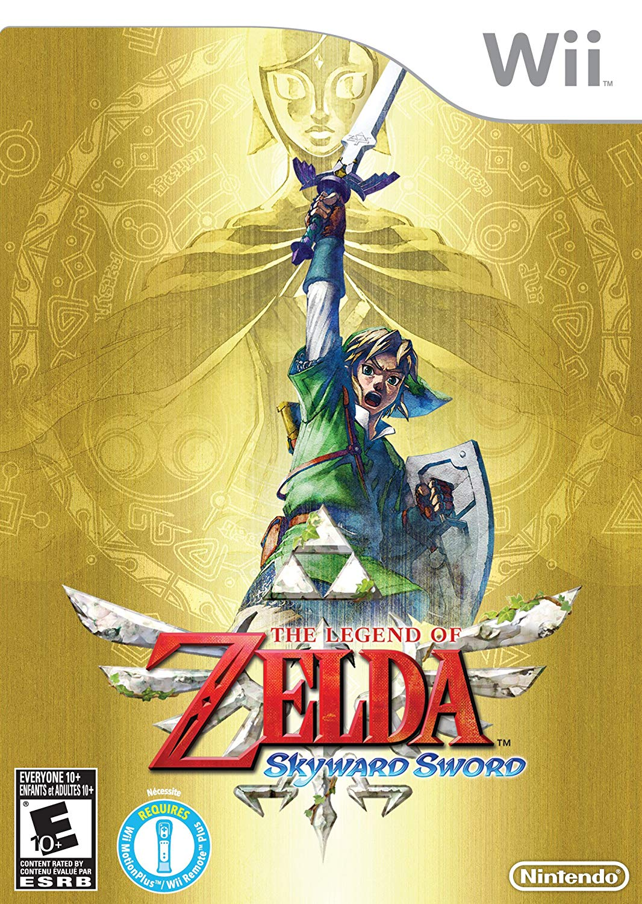

The Legend of Zelda: Skyward Sword se passa no comeco da cronologia de The Legend of Zelda. De acordo com a lenda, tres deusas antigas conferiram um grande poder capaz de conceder qualquer desejo: a Triforce. O Rei Demônio Demise queria a Triforce e em sua procura por esse poder ele acabou devastando boa parte da terra. A deusa Hylia reuniu o povo sobrevivente em um afloramento gigante de rochas e o enviou para o ceu acima das nuvens, permitindo assim que ela lancasse uma ofensiva total contra Demise junto com as especies benevolentes aliadas remanescentes. Hylia saiu-se vitoriosa, porem a terra foi seriamente danificada. Incontaveis anos depois, o afloramento passou a ser conhecido como Skyloft e seu povo acredita que a "Superficie" abaixo das nuvens e um mito.
The Legend of Zelda, e uma serie de jogos eletronicos da Nintendo criada em 1986 por Shigeru Miyamoto e Takashi Tezuka. Os jogos se passam no reino de Hyrule, num ambiente de fantasia. A jogabilidade mistura aventura e acao com elementos diversos. A serie e muito apreciada por suas tramas complexas, quebra-cabecas, jogabilidade e pela superproducao.
O protagonista e o jovem heroi Link cuja missao e proteger o reino de Hyrule e a Triforce, a reliquia deixada pelas Deusas criadoras do mundo, capaz de realizar desejos trazendo ao mundo uma era de harmonia e prosperidade, mas que tambem poderia destrui-lo caindo em maos erradas. Cada um dos triangulos tem uma virtude diferente: Coragem, Sabedoria e Poder. O principal antagonista da serie e Ganon (Ganondorf Dragmire). Porem conforme o tempo que os jogos foram evoluindo, se estabeleceu na mitologia, uma grande guerra contra o mal, trazendo novos viloes à tona.